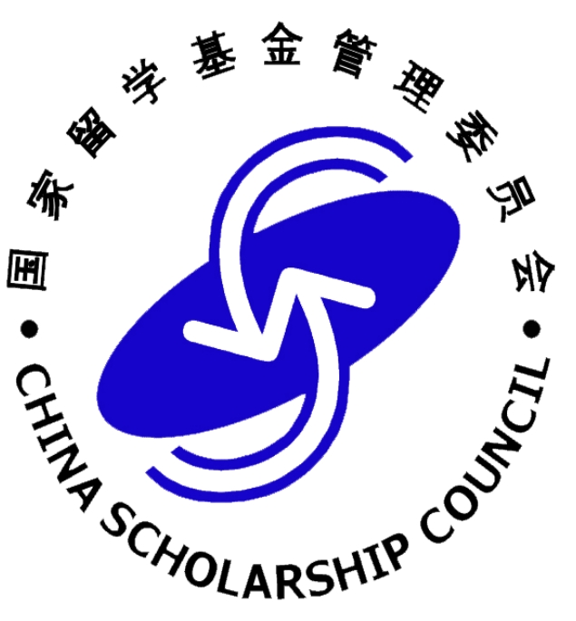

Hao Zhang-个人学术主页


I am now a last year Ph.D. candidate under the supervision of Prof. Fuhui Zhou
in College of Electronic and Information Engineering ,
Nanjing University of Aeronautics and Astronautics .
I was selected as a member of Top-notch Postgraduate Innovative Talents Training “Yinhang Project” (研究生拔尖创新人才培养“引航计划”) of NUAA in 2022.
I am now a visiting Ph.D. student under the supervision of Assoc Prof Chau Yuen's group in the School of Electrical & Electronic Engineering, Nanyang Technological University supported by Chinese Government Scholarship from China Scholarship Council (CSC) .
I have received a Master of Engineering degree, and a Bachelor's degree from Nanchang University  , majoring in Electrical and Communication Engineering and Internet of Things Engineering in 2020 and 2017, respectively.
, majoring in Electrical and Communication Engineering and Internet of Things Engineering in 2020 and 2017, respectively.
Until now, I have published over 15 papers (citation: 

My homepage is hosted in server and Github
我目前是南京航空航天大学 电子信息工程学院 的博士研究生，指导老师为周福辉教授。
我于2022年入选南京航空航天大学研究生拔尖创新人才培养“引航计划”。
我于2024年1月加入南洋理工大学 电气与电子工程学院 Assoc Prof Chau Yuen课题组，作为国家留学基金委资助的联合培养博士研究生。
我分别于2017年和2020年在南昌大学获得物联网工程专业学士学位和电子与通信工程硕士学位。
到目前为止，我已发表论文10余篇（引用：
News
Mar 26 2024. Our paper “SSwsrNet: A Semi-Supervised Few-Shot Learning Framework for Wireless Signal Recognition” is accpeted by IEEE Transactions on Communications.
Jan 11 2024. Our paper “Breathing Phenomenon of Soil Desiccation Cracking: Field Monitoring and Insights” is accepted by Journal of Geophysical Research-Earth Surface.
Jan 1 2024. I am now in Singpore, and I will work in NTU as a visiting Ph.D. student in year 2024.
Nov 27 2023. I will join Assoc Prof Chau Yuen's group in the School of Electrical & Electronic Engineering, Nanyang Technological University in Jan 2024.
Oct 27 2023. Our paper “Automatic Soil Desiccation Crack Recognition Using Deep Learning” was selected as the insightful paper on Artificial Intelligence and Statistics in geotechnics published in the decade 2013‑2023 by Géotechnique.
July 26 2023. I was awarded the Chinese Government Scholarship by the Chinese Scholarship Council (CSC).
June 7 2023. Our project is officially supported by the Postgraduate Research & Practice Innovation Program of Jiangsu Province (Grant No. KYCX23_0380).
June 6 2023. Our two papers are accepted by Ucom 2023, which will be held in Xi’an, on July 7-9th 2023.
Apr 20 2023. Our project is supported by the Interdisciplinary Innovation Fund for Doctoral Students of NUAA (No. KXKCXJJ202302).
Research Interests
Deep Convolutional Neural Networks (DCNN) is a class of artificial neural network with multiple layers between the input and output layers, most commonly applied to analyzing visual imagery.
Radio Frequency Machine Learning (RFML) aims to apply machine learning and deep learning for a multitude of tasks in wireless communications, such as signal classification, spectrum sensing and signal identification and cognitive radio.
Projects [more]
“Few Sample Modulation Identification under High Dynamic Environment”, Postgraduate Research & Practice Innovation Program of Jiangsu Province (Grant No. KYCX23_0380), 15,000 RMB.
“Research on Comprehensive Mechanical Performance of Coral Concrete Foundation Island and Reef Wind Turbines Based on Interpretable Deep Learning”, Interdisciplinary Innovation Fund for Doctoral Students of NUAA (No. KXKCXJJ202302), 100,000 RMB.
Selected Papers [more]
RFML
SSwsrNet: A Semi-Supervised Few-Shot Learning Framework for Wireless Signal Recognition
Hao Zhang, Fuhui Zhou, Qihui Wu, and Naofal Al-Dhahir.
IEEE Transactions on Communications, doi: 10.1109/TCOMM.2024.3385921A Novel Automatic Modulation Classification Scheme Based on Multi-Scale Networks
Hao Zhang, Fuhui Zhou, Qihui Wu, Wei Wu, and Rose Qingyang Hu.
IEEE Transactions on Cognitive Communications and Networking, vol. 8, no. 1, pp. 97-110, March 2022, doi: 10.1109/TCCN.2021.3091730.
Automatic Modulation Classification Using Involution Enabled Residual Networks
Hao Zhang, Lu Yuan, Guangyu Wu, Fuhui Zhou, and Qihui Wu.
IEEE Wireless Communication Letters, vol. 10, no. 11, pp. 2417-2420, Nov. 2021, doi: 10.1109/LWC.2021.3102069.
DCNN
Recent Progresses on Object Detection: A Brief Review
Hao Zhang, Xianggong Hong.
Multimedia Tools and Applications: 78 (19), 27809-27847. (CCF-C)
Automatic Soil Desiccation Crack Recognition Using Deep Learning
Jin-Jian Xu, Hao Zhang, Chao-Sheng Tang, Qing Cheng, Bo Liu, Bin Shi
Geotechnique 2022 72:4, 337-349.
ESI Highly Cited Paper & 75th Géotechnique Anniversary Early Career Award (insightful paper on Artificial Intelligence and Statistics in geotechnics published in the decade 2013‑2023)
Reported by Nanchang University Library in WeChat Official Account (2023-03-06)
Services
Student Members


Journal Reviewers
Conference Reviewers
Education and Working
Visiting Ph.D. student, Nanyang Technological University, Jan. 2024-now.
Ph.D candidate, Information and Communication Engineering, NUAA, April 2021-now.
Research assistant, Information and Communication Engineering, NUAA, July 2020-March 2021.
M.Eng., Electrical and Communication Engineering, Nanchang University, June 2020.
B.S., Internet of Things Engineering, Nanchang University, June 2017.
Awards and Honors
Chinese Government Scholarship, Chinese Scholarship Council (CSC), Jul. 2023.
Top-notch Postgraduate Innovative Talents Training “Yinhang Project” of NUAA, May 2022.
Outstanding Graduates of Nanchang University (4%), Jun. 2020.
The First Prize Graduate Scholarship of Nanchang University, May 2020.
The First Prize Graduate Scholarship of Nanchang University, May 2019.
The Second Prize Graduate Scholarship of Nanchang University, May 2018.
The Third Prize of 12th Graduate Electronics Design Contest(Huazhong), Jul. 2017.
The First Prize Scholarship of Nanchang University, May 2017.
The First Prize Scholarship of Nanchang University, Nov. 2016.
The Special Grade Scholarship of Nanchang University, Nov. 2015.
The First Prize Scholarship of Nanchang University, Nov. 2014.
The Second Prize Scholarship of Nanchang University, Apr. 2014.
Contact
Emails
Offices
Address in Singpore: School of Electrical & Electronic Engineering (EEE), Nanyang Technological University, 50 Nanyang Avenue, Singapore 639798
Address in Nanjing: No.29, Jiangjun Avenue, Jiangning District, Nanjing, Jiangsu, China, 211106
 皖ICP备20010101号-1
皖ICP备20010101号-1  苏公网安备32011502011959号
苏公网安备32011502011959号